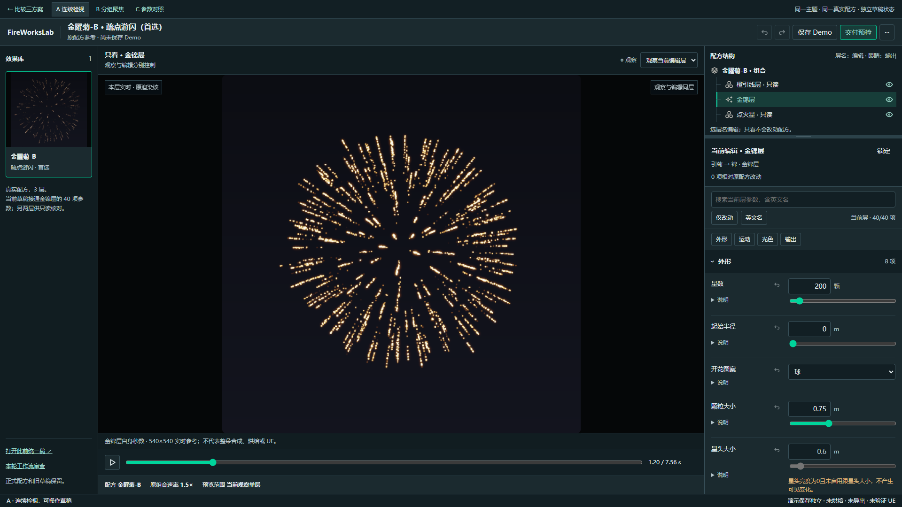
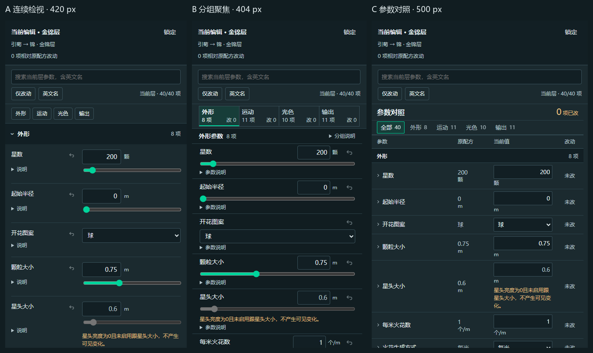

A · 实际页面截图待生成三套独立交互草稿
同一套制作空间，
三种参数工作流。
保留蓝灰与青绿主配色、库 / 画布 / 检视器的大布局。只比较参数怎样组织、怎样定位，以及改动怎样被看清。
40 个真实字段金锦层可编辑选层原引擎实时模拟
选择一种方式开始
数据与预览相同，阅读节奏不同
截图为真实草稿页面；点击图片或按钮进入可操作版本。
同尺度实页对照
把三套参数面板放在一起看
用相同尺度比较名称、控件、留白和信息密度；点击可查看原图。

同尺度参数面板实页对照图待生成比较组织方式
三套方案各自解决什么
以下是设计目标，实际表现以页面验证为准。
表格可左右滚动，查看三套方案的对应项。
| 比较项 | A · 连续检视 | B · 分组聚焦 | C · 参数对照 |
|---|---|---|---|
| 怎样找参数 | 沿模块连续阅读与定位 | 先选任务组，再找字段 | 先扫描名称与数值列 |
| 怎样调整 | 保留连续参数行 | 聚焦当前组的控件与说明 | 在对照表中选择，再展开编辑 |
| 怎样看改动 | 在原位置追踪状态 | 看组内改动与分组摘要 | 原值与当前值并列核对 |
| 主要成本 | 滚动距离 | 跨组切换 | 编辑入口与阅读密度 |
用同一个小任务比较
选择金锦层 → 把颗粒大小从 0.75 调到 1.5 m → 拖到本层 2.3 s 看变化 → 找到本次改动并撤销。再比较切组、切层、保存与刷新后是否容易接续。
本轮共用改进
观察统一在画布上方选择器；层名负责编辑，眼睛负责输出。交付清单留在预览旁。B 的参数行从初轮约175 px收敛至约81 px；原核改为按需绘制，失效时给出真实原因与手动重试。标签与入口简化，原有能力继续保留。
本轮范围
可以操作到哪一步
控件专项覆盖 Chrome 154.0.8037.58 / Edge 156.0.4314.50；1920、1366、2560宽度、683×384短窗与390宽度。DPR2为单独案例，不混同所有屏幕组合。完整范围见 设计QA 与 机器报告。
真实数据与条件
40 个字段来自 GLB-S1 原配方与生产参数表。金锦层可编辑；橙引线层、点灭星保留各自真实原值，只读但可单独观察。
每米 / 每秒密度分别保留；星头亮度为 0 时，相应大小字段说明当前无效。常用滑杆区间不充当新的合法上下限。
真实选层预览
隔离沙箱复用原烘焙器的实时模拟核，响应当前选层参数与时间。显示的是本层秒数，内部固定540×540供实时参考；原组合的时间倍率未在这里冒充整朵同步。
本轮没有真正烘焙、素材导出或 UE 写入。整朵组合、引擎回放和贴图流转仍未接通。
验证状态，分开看
- 已核对40 项原值与三层数据
- 控件 / 降级212 项专项检查通过
- 真实原核66 项整页复核通过 ↗
212项控件专项使用受控503；66项真实核复核使用真实画布合成截图，分别计数。完整读屏、组合联动及生产保存/烘焙/导出/UE未覆盖。AI自检与用户选择分别记录。
参考原则与本项目取舍 5 份官方资料
借鉴组件行为，保留已认可的颜色、选中态与接近直角的画风。以下适配是本轮的设计判断，不代表直接套用某套组件库。
Spectrum · 连续量与精确值
Slider 与 Number field 提供快速拖动与精确输入的参照。这里保留单位和条件，区分常用滑杆区间与原业务边界。
Fluent · 同任务的动作归组
Toolbar 的逻辑归组与溢出原则，用于让常用动作可找。画布操作、草稿保存与参数编辑仍保留各自清楚的作用范围。
Carbon · 对齐与状态
Forms 与 Number input 帮助核对字段对齐、标签、错误及只读状态。连续物理量仍支持精确手输，不强制以步进按钮调整大范围数值。